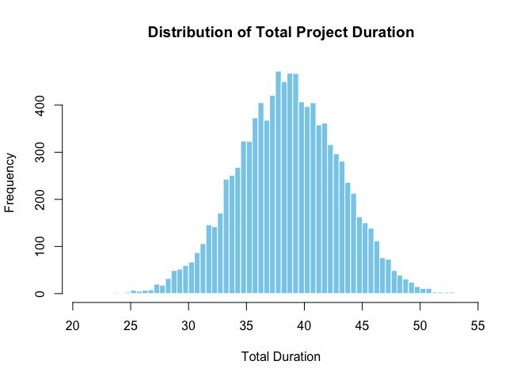

Introduction
PRA is an R package for project risk analysis. The package provides a set of tools for performing various types of risk analysis, including Monte Carlo simulation, sensitivity analysis, and earned value management.
Key features:
- Second Moment Analysis
- Monte Carlo Simulation
- Contingency Analysis
- Sensitivity Analysis
- Earned Value Management
- Learning Curves
- Design Structure Matrices
Installation
To install the release verion of PRA, use:
install_packages('PRA')You can install the development version of PRA like so:
devtools::install_github('paulgovan/PRA')Usage
Here is a simple example of how to use the package for Monte Carlo simulation.
First, load the package:
Next, set the number of simulations and describe probability distributions for 3 work packages:
num_simulations <- 10000
task_distributions <- list(
list(type = "normal", mean = 10, sd = 2), # Task A: Normal distribution
list(type = "triangular", a = 5, b = 10, c = 15), # Task B: Triangular distribution
list(type = "uniform", min = 8, max = 12) # Task C: Uniform distribution
)Then, set the correlation matrix between the 3 work packages:
Finally, run the simulation using the mcs function:
results <- mcs(num_simulations, task_distributions, correlation_matrix)To calculate the mean of the total duration:
Mean Total Duration is 38.7
To calculate the variance of the total duration:
Variance around the Total Duration is 19.79
To build a histogram of the total duration:
hist(results$total_distribution, breaks = 50, main = "Distribution of Total Project Duration",
xlab = "Total Duration", col = "skyblue", border = "white")
More Resources
Much of this package is based on the book Data Analysis for Engineering and Project Risk Managment by Ivan Damnjanovic and Ken Reinschmidt and comes highly recommended.
Code of Conduct
Please note that the PRA project is released with a Contributor Code of Conduct. By contributing to this project, you agree to abide by its terms.